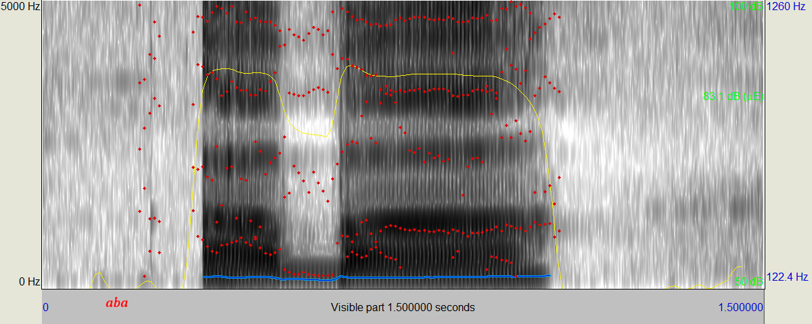
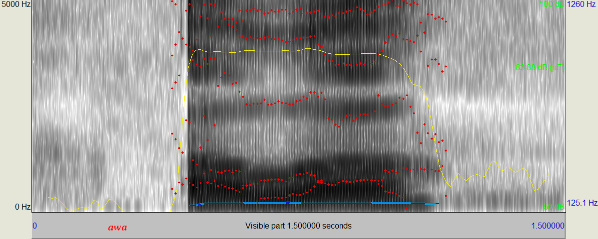

In Spain and West Bengal it is sometimes used to represent the English B sound.

In English the letter V is used to represenmt a labio-dental fricative, which is sort of somehow like F, but voiced.

♦ In Spanish and Hindi the letter V may also mean a bi-labial approximant, which is a sound very like B. The difference is that in approximant V the lips ALMOST touch each other, but not so hard as to make any turbulence.
♦ ♦ In Hindi the letter V is sometimes pronounced as English W. That is called a semivowel. It is basically the same thing as an "u". But they only make the w sound when the v letter is after a consonant.

♦ In Sanskrit the two Hindi pronunciations are okay. Most people pronounce the V that is between two vowels AS AN approximant, and the v that is after a consonant AS a semivowel.